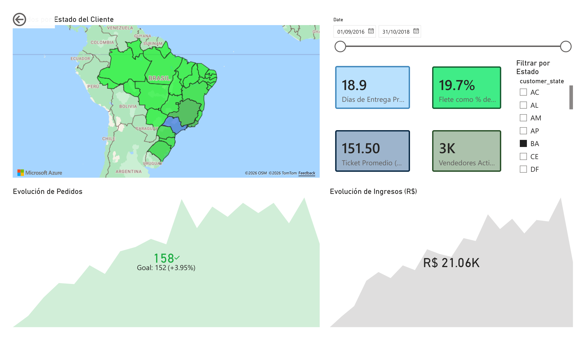
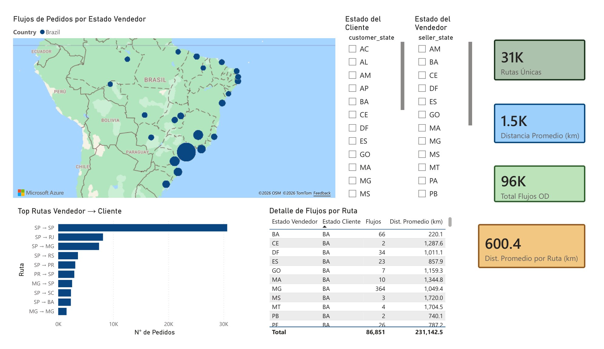
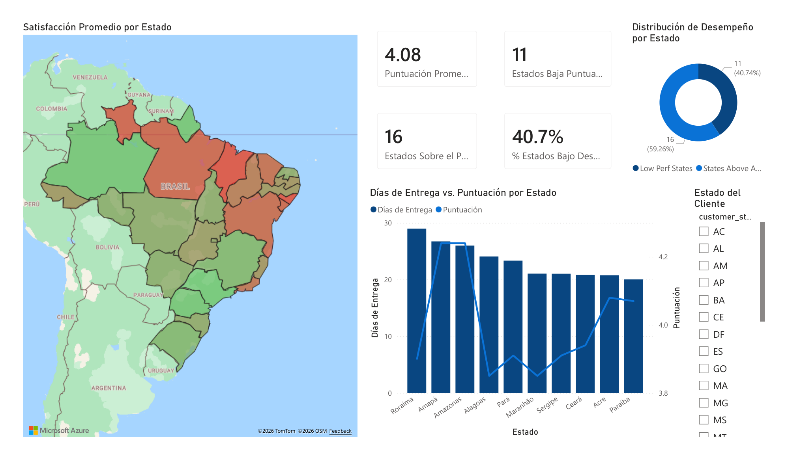

E-Commerce Geoespacial — Olist
Estadística espacial avanzada sobre 100 000 órdenes brasileñas (2016–2018): clustering de vendedores, variación regional en tiempos de entrega y autocorrelación espacial de satisfacción.
Resumen ejecutivo
Aplicación de técnicas geoestadísticas avanzadas (DBSCAN, GWR, Moran's I/LISA) al dataset público de Olist para revelar la dimensión espacial del e-commerce en Brasil que los KPIs agregados ocultan. El proyecto integra análisis en Python con un dashboard interactivo en Power BI (Azure Maps, esquema estrella, DAX) y tres mapas Folium embebidos.
Contexto / Problema
Brasil es un país continental: un vendedor en São Paulo y un comprador en Manaus pueden compartir la misma categoría de producto y experimentar tiempos de entrega, costos de flete y puntajes de satisfacción radicalmente distintos. Los KPIs agregados (promedio nacional) oscurecen completamente esta señal espacial. Con los centroides ZIP del dataset de Olist es posible aplicar estadística espacial que va más allá del análisis tabular convencional.
Datos
| Característica | Detalle |
|---|---|
| Fuente | Olist Brazilian E-Commerce Public Dataset — Kaggle |
| Volumen | ~100 000 órdenes · 8 tablas relacionales CSV · 2016–2018 |
| Tablas clave | orders, order_items, customers, sellers, products, order_reviews, payments, geolocation |
| Geometría | Centroides de ZIP codes derivados de la tabla geolocation |
| Cobertura | Todo Brasil — 27 estados |
Herramientas y tecnologías
Geoespacial y estadística espacial
Visualización
Dashboard
Datos y entorno
Metodología / Proceso
EDA
Perfil de las 8 tablas: distribuciones, timeline de órdenes y conteos de nulos.
Calidad geoespacial
Detección de coordenadas fuera de Brasil; derivación de centroides ZIP como media de lat/lon en la tabla geolocation.
Clustering DBSCAN
eps=50 km, min_samples=3 sobre coordenadas de vendedores. Identificación de clusters densos y zonas desatendidas.
GWR (Regresión Geográficamente Ponderada)
Distancia Haversine vendedor-comprador como predictor del tiempo de entrega; coeficientes locales para revelar cuellos de botella regionales.
Moran's I / LISA
Índice de autocorrelación espacial de satisfacción promedio por estado; mapa de cuadrantes HH/LL/HL/LH.
Dashboard Power BI
Exportación de 4 CSVs analíticos; esquema estrella con DimSellerState; medidas DAX para KPIs y flujos OD; Azure Maps para visualización geográfica.
Mi rol y contribución
- Diseñé las tres preguntas de investigación y seleccioné las técnicas estadístico-espaciales apropiadas para cada una.
- Construí los cuatro módulos reutilizables (
data_loader.py,quality_checks.py,geospatial_utils.py,models.py) que separan la lógica de transformación del análisis. - Resolví el bug de filtrado de Azure Maps en Power BI: el mapa mostraba el total global porque usaba un campo de la tabla de hechos como Location. Lo solucioné creando la dimensión
DimSellerStateen DAX con relación bidireccional, propagando correctamente el contexto de filtro. - Diseñé el esquema estrella del dashboard y escribí las medidas DAX para KPIs y métricas de flujo OD.
- Generé los tres mapas interactivos Folium con codificación visual diferenciada por técnica analítica.
Resultados e insights
| Análisis | Hallazgo |
|---|---|
| DBSCAN | Concentración máxima en corredor Sudeste SP–MG–PR; 71% de flujos OD desde São Paulo |
| GWR | Efecto distancia-entrega varía significativamente por región; cuellos de botella en Norte y Nordeste |
| Moran's I | Autocorrelación espacial positiva confirmada; estados de baja satisfacción se agrupan geográficamente |
| Flujos OD | 68 079 flujos desde São Paulo · distancia media ~1 500 km (escala continental) |
Mapas interactivos
Clusters DBSCAN de vendedores
Coeficientes GWR: efecto local de la distancia sobre la entrega
LISA — autocorrelación espacial de satisfacción
Dashboard Power BI

Página 1 — Geospatial Overview: KPIs + distribución geográfica de ventas

Página 2 — OD Flow Analysis: flujos origen-destino en Azure Maps

Página 3 — Satisfaction: análisis espacial de satisfacción del comprador
Conclusiones
La escala continental de Brasil hace que el análisis espacial sea indispensable: los promedios nacionales ocultan disparidades regionales críticas. El GWR revela que no existe un único "efecto de la distancia" en Brasil —varía hasta un 300% entre regiones—, lo que tiene implicaciones directas para estrategias de distribución y gestión logística. La confirmación de autocorrelación espacial en satisfacción sugiere que las intervenciones de mejora deben diseñarse a nivel regional, no nacional.
Aprendizaje técnico: En Power BI, Azure Maps requiere que el campo Location provenga de una tabla dimensión (no de hechos) para propagar correctamente el contexto de filtro. La solución fue crear DimSellerState como tabla calculada en DAX.